Next: First order flow correction
Up: Spherical enclosures
Previous: First order mass fraction
Contents
It is convenient to decompose the first order flow into the parts due to
inertia and buoyancy:
where the parts are both solenoidal and vanish at the boundary and satisfy
| 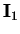 |
 |
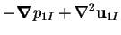 |
(8.52) |
| 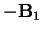 |
|
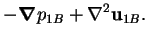 |
(8.53) |
The inertia force, , contains the single term
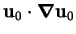, which simplifies greatly from the
general form (8.26).
Since only the azimuthal component of  is nonzero, and since it
is independent of
is nonzero, and since it
is independent of  ,
,
 reduces to
reduces to
These are precisely the terms of the equation of motion referred to in
§8.1.1: they are proportional to the square of the component
of velocity about the axis and inversely proportional to the distance from the
axis. Bird et al. (1960, p. 85) called them the `centrifugal force'.
Again,
 is found by the method of §B.4.
The inertia force, , is found to have no toroidal part; the
scalars defining its decomposition are:
is found by the method of §B.4.
The inertia force, , is found to have no toroidal part; the
scalars defining its decomposition are:
| 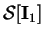 |
|
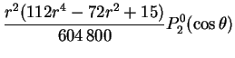 |
|
| |
|
 |
(8.55) |
| 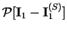 |
|
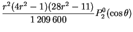 |
(8.56) |
| 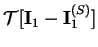 |
|
 |
(8.57) |
As a result, the velocity is purely poloidal:
| 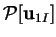 |
|
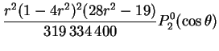 |
(8.58) |
| 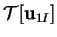 |
|
|
(8.59) |
Its spherical components are:
| 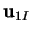 |
|
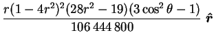 |
|
| |
|
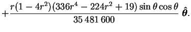 |
(8.60) |
Since, in addition,
is independent of , the
flow field in any plane passing through the  -axis
can be represented by a Stokes's stream-function (see §B.5):
-axis
can be represented by a Stokes's stream-function (see §B.5):
the contours of which are plotted in figure 8.7.
Figure 8.7:
Stream-lines of the first order flow due to inertia (8.61) in any
plane of constant . 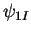 is nonnegative for 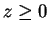.
Contour levels at 0.01, 0.1(0.1)0.4, 0.6(0.1)0.9, 0.99 of range.
| 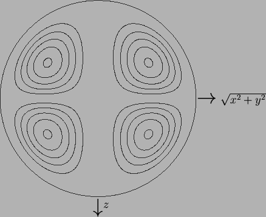 |
The pressure,
is illustrated in figure 8.8.
Figure 8.8:
First order pressure due to inertia,
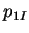, (8.62) in any plane of constant
. The maxima occur in the circle  ,
,  .
Contour levels at 0.01, 0.1(0.1)0.4, 0.6(0.1)0.9, 0.99 of range.
.
Contour levels at 0.01, 0.1(0.1)0.4, 0.6(0.1)0.9, 0.99 of range.
| 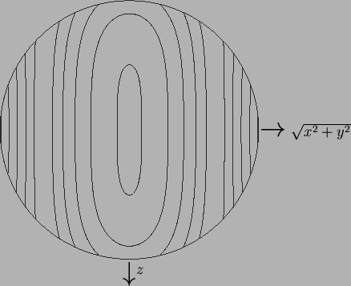 |
Since the circulation is positive around maxima of the stream-function, the
flow is radially inward along the -axis and outward in the  -plane,
and so is analogous to secondary flow in curved pipes and rivers, circular
aquaculture tanks and stirred tea cups, as discussed in §8.1.1.
The correction,
-plane,
and so is analogous to secondary flow in curved pipes and rivers, circular
aquaculture tanks and stirred tea cups, as discussed in §8.1.1.
The correction,
 , is independent of all the parameters of the
problem, but its effect on the velocity field vanishes with
, is independent of all the parameters of the
problem, but its effect on the velocity field vanishes with
 .
.
Next: First order flow correction
Up: Spherical enclosures
Previous: First order mass fraction
Contents
Geordie McBain
2001-01-27